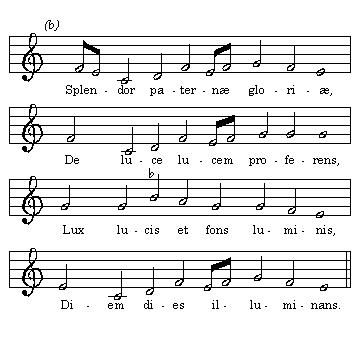

|
| A B C D E F G H I J K L M N O P Q R S T U V W X Y Z |
The question as to what constitutes Ambrosian chant in the sense of chant composed by St. Ambrose has been for a long time, and still is, a subject for research and discussion among historians and archæologists. When the saint became Bishop of Milan, in 374, he found a liturgy in use which tradition associates with St. Barnabas. It is presumed that this liturgy, which was brought from Greece and Syria, included singing by the celebrant as well as the spoken word and liturgical action. On the other hand, it is certain that the greater part of the chants now used in connection with the Ambrosian, or Milanese, rite, which are frequently designated in the wider sense as Ambrosian chant, originated in subsequent centuries as the liturgy was developed and completed. So far no documents have been brought to light which would prove that the saint composed anything except the melodies to most of his hymns. Of a large number of hymns attributed to him, only fourteen are pronounced with certainty to be his, while four more may be assigned to him with more or less probability. Like any other great man who dominates his time, St. Ambrose had many imitators, and it so happened that hymns written by his contemporaries or those who came after him, in the form which he used, that is, the Iambic dimeter, were called "Hymni Ambrosiani". The confusion brought about in the course of time by the indiscriminate use of this designation has necessitated endless study and research before it was decided with any degree of certainty which hymns were by St. Ambrose and which by his imitators. As regards the melodies, it has been equally difficult for archæologists to distinguish them and restore them to what was probably their original form.
Although the opinion that the early Western Church received into her liturgy, together with the psalms of the Old Testament, the melodies to which they had been sung in the Temple and the synagogues, and that melismatic chants (those in which many notes may be sung to one syllable of the text, in contradistinction to syllabic chants, in which there is only one note for each syllable) were in use from the beginning, has been defended with plausibility by men like Hermesdorf, Delitzsch, and, lately, by Houdard (Cantilène Romaine, 1905), no direct contemporary testimony that such was the case has yet been discovered. It is likely that the florid, or melismatic, style in which most of our Gregorian propria are written, and which many authorities hold to be of Hebrew origin, found its way into the Church at a much later period. The literature at the time of St. Ambrose shows that the Greek music was the only kind known to the saint and his contemporaries. St. Augustine, who wrote his unfinished work "De Musicâ" at about the time that St. Ambrose wrote his hymns, gives us an idea as to the form which the melodies must have had originally. He defines music as "the science of moving well" (scientia bene movendi) and the Iambic foot as consisting "of a short and a long, of three beats". As in the case of St. Ambrose we have poet and composer in one person, it is but natural to suppose that his melodies took the form and rhythm of his verses. The fact that these hymns were intended to be sung by the whole congregation, over which, according to the Arians, the saint cast a magic spell by means of his music, also speaks in favour of their having been syllabic in character and simple in rhythm. For several centuries it has been held that St. Ambrose composed what are now termed antiphons and responsories. There is no satisfactory proof that such is the case. The fact that he introduced the antiphonal (alternate) mode of singing the psalms and his own hymns (each of the latter had eight stanzas), by dividing the congregation into two choirs, probably gave rise to this opinion. The responsory as practised by direction of St. Ambrose consisted in intoning the verse of a psalm by one or more chanters and the repetition of the same by the congregation.
Guido Maria Dreves, S.J., F. A. Gevaert, Hugo Riemann, and others have endeavoured to show how the melodies belonging to the authentic Ambrosian texts have been transmitted to posterity and what rhythmical and melodic changes they have suffered in the course of time in different countries. Dreves first consulted the "Psalterium, cantica et hymni aliaque divinis officiis ritu Ambrosiano psallendis communia modulationibus opportunis notata Frederici [Borromeo] Cardinalis Archiepiscopi jussu edita. Mediolani apud hæredes Pacifici Pontii et Joannem Baptistam Piccaleum impressorem archiepiscopalem, MDCXIX" and the complete Ambrosian manuscript Hymnary in the Bibliotheca Trivulziana in Milan, which two works are most likely to contain the best traditions. The melodies as they appeared in these works were then compared with manuscripts of the twelfth, thirteenth, fourteenth, and fifteenth centuries at Naples, Monza, Prague, Heiligen Kreuz, St. Florian (Austria), Nevers (France), and Coldingham (Scotland), preserved by the Cistercian monks, who from the foundation of that order had used the Ambrosian hymnary and not the Roman. This comparison made it possible to eliminate the many melismatic accretions and modifications received, evidently, at the hands of singers who were influenced by the taste of their times and found the original melodic simplicity unsatisfactory. As to the rhythm, it must be remembered that the Ambrosian, like all plain-chant melodies, lost their rhythm in the course of the Middle Ages. They were transcribed from the ancient neumatic notation into square notes of equal length, the time given to them being determined by the text syllables to which they were sung. Bearing in mind St. Augustine's definition, and the fact that in St. Ambrose's time accent had not overshadowed quantity in poetry, we see that Dreves is justified in his mode of restoring the melodies, at least as far as their rhythm is concerned. Inasmuch as all the hymns are written in the same metre, the melodies may be, and undoubtedly have been, used interchangeably. The following illustrations will give us an idea of the different forms of the same melody in the various codices. The melody to the hymn "Æterne rerum Conditor", according to the above- mentioned Psalterium and the hymnary of the Bibliotheca Trivulziana, we reproduce under (a). Under (b) we will give the same tune as it is contained in a codex of St. Florian dating from the fourteenth century. Under (c) is the same melody as restored by Dreves, stripped of its added notes, and in the rhythmical form which it probably had originally.
The hymn "Splendor paternæ gloriæ" exists in more different forms than the one which we have considered above. Version (a) gives the form of the melody as it reads in the Psalterium; (b), as it is in the antiphonary of Nevers of the twelfth century; (c), the version contained in a codex of the thirteenth century in the National Library at Naples; under (d), as it is found in an antiphonary of the fourteenth century in St. Florian, Austria, and, finally, (e) gives us the restored and, probably, the original form.

We next give the five variants of the hymn "Nunc Sanctæ nobis Spiritus", of which (a) reproduces the melody as it is in the Bibliotheca Trivulziana; (b), from the codex of Nevers; (c), the Coldingham (thirteenth century) version; (d), that of the Cistercian manuscript of Prague (thirteenth century); and (e) is the Dreves restoration.
The melody in the Ambrosian hymn "Hic est dies verus Dei" is of added interest because it is the one to which the Pentecostal hymn "Veni Creator Spiritus" has always been sung. As the Easter hymn is older by several centuries than the "Veni Creator Spiritus", the melody was adapted to the latter; (a) is the form it has in the Psalterium and the hymnary of the Bibliotheca Trivulziana; (b) gives us the Nevers adaptation of the melody to the "Veni Creator Spiritus"; (c) is Dreves's restoration of the original form.
DREVES, Aurelus Ambrosianus, Der Vater der Kirchengesanges; GEVAERT, La mélopée antique dans le chant de l'église latine; JULIAN, Dict. of Hymnology; RIEMANN, Handbuch der Musikgeschichte; HOUDARD, La Cantilène Romaine. La Paleographie Musicale of the Benedictines of Solemes, V and VI also offers instructive material
APA citation. (1907). Ambrosian Chant. In The Catholic Encyclopedia. New York: Robert Appleton Company. Retrieved April 26, 2010 from New Advent: http://www.newadvent.org/cathen/01389a.htm
MLA citation. "Ambrosian Chant." The Catholic Encyclopedia. Vol. 1. New York: Robert Appleton Company, 1907. 26 Apr. 2010 <http://www.newadvent.org/cathen/01389a.htm>.
Transcription. This article was transcribed for New Advent by WGKofron. In memory of Fr. John Hilkert, Akron, Ohio — Fidelis servus et prudens, quem constituit Dominus super familiam suam.
Ecclesiastical approbation. Nihil Obstat. March 1, 1907. Remy Lafort, S.T.D., Censor. Imprimatur. +John Cardinal Farley, Archbishop of New York.
Contact information. The editor of New Advent is Kevin Knight. My email address is webmaster at newadvent.org. (To help fight spam, this address might change occasionally.) Regrettably, I can't reply to every letter, but I greatly appreciate your feedback — especially notifications about typographical errors and inappropriate ads.